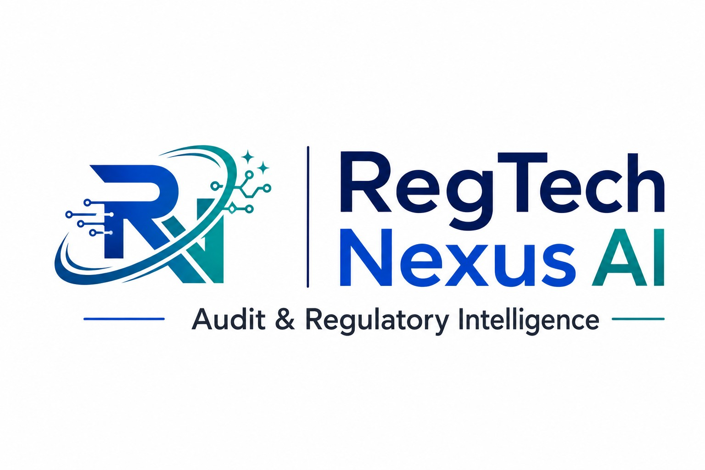

Choose the perimeter
Start with Singapore, Dubai/UAE or Australia. Dubai is kept jurisdiction-aware rather than treated as one generic UAE rulebook.

Start assessment ↗Choose a jurisdiction, record what your organisation can evidence, and get an indicative readiness score, priority gaps and the next practical action. The assessment runs in your browser and is designed for discussion—not regulatory sign-off.
Do not enter customer names, account numbers, transaction details, personal data or confidential documents. This is an independent browser-based review aid. It is not produced, approved, endorsed, authorised or certified by MAS, VARA, DFSA, CBUAE, AUSTRAC, APRA, ASIC or any government authority.
Each answer produces a visible result. Nothing is hidden behind an unexplained percentage.
Start with Singapore, Dubai/UAE or Australia. Dubai is kept jurisdiction-aware rather than treated as one generic UAE rulebook.
For each control, select Ready, Partial, Missing, Not assessed or Not applicable. Use a non-sensitive project label only.
See critical gaps, evidence still needed and the next suggested action. The score is an indicator of evidence readiness.
Download a plain-text report or print/save the result as PDF. Your entries stay in this browser unless you choose to share the file.
Complete the controls that apply to your use case. A control marked Missing or Not assessed remains an open action; a Partial answer counts as half-complete until evidence is strengthened.
Use this path when your review involves AI governance, financial-crime controls, beneficial ownership, trade risk or preparation for controlled information sharing.
Evidence to look for: inventory, accountable owner, intended decision, affected people and materiality/risk classification.
Evidence to look for: data-quality checks, fairness review, explainability, override/escalation path and monitoring after change.
Evidence to look for: vendor register, cloud responsibilities, change control, incident process, service-level expectations and review dates.
Evidence to look for: ownership/control map, verification source, refresh date and escalation for opaque or layered structures.
Evidence to look for: trade-document review, red-flag library, escalation threshold, case rationale and human decision owner.
Evidence to look for: confidentiality rules, access approval, referral rationale, retention and audit trail for internal review.
Complete the fields above to see the evidence picture.
Indicative review support only. The score is not a compliance rating, filing decision or regulatory conclusion.
Start by recording the correct perimeter. CBUAE/onshore, DIFC/DFSA and Dubai/VARA are not interchangeable. ADGM/FSRA is in Abu Dhabi and should be assessed separately.
Evidence to look for: location, licence, regulated activity, delivery channel and the chosen CBUAE, VARA or DFSA path.
Evidence to look for: customer risk assessment, beneficial ownership, PEP/sanctions screening, source of funds and escalation records.
Evidence to look for: wallet/counterparty risk, Travel Rule process, source-of-funds, blockchain evidence and VASP due diligence.
Evidence to look for: trade documents, goods/value consistency, counterparties, free-zone exposure and escalation for unusual routes.
Evidence to look for: custody or platform controls, vendor register, incident process, service dependencies and exit considerations.
Evidence to look for: internal escalation, decision rationale, reporting responsibility, review quality and record retention.
Complete the fields above to see the evidence picture.
Indicative review support only. The score is not a compliance rating, filing decision or regulatory conclusion.
Use this path to structure an AML/CTF program review alongside CPS 230 operational-resilience evidence. FAR accountability mapping is referenced as a separate governance layer.
Evidence to look for: entity classification, designated service, registration, accountable owner and transition stage.
Evidence to look for: risk assessment, AML/CTF program, initial CDD, ongoing CDD, enhanced measures and review cadence.
Evidence to look for: SMR, threshold reporting, Travel Rule where applicable, filing workflow, deadline control and record retention.
Evidence to look for: independent evaluation, training completion, scenario testing, issue log and remediation owner.
Evidence to look for: critical operations, maximum tolerable disruption, scenario tests, recovery evidence and board/management reporting.
Evidence to look for: provider register, contract controls, fourth-party dependency, incident history, concentration and exit strategy.
Complete the fields above to see the evidence picture.
Indicative review support only. The score is not a compliance rating, filing decision or regulatory conclusion.
This page is for early-stage review, training, workshop preparation and evidence-gap discussion. A bank or regulated institution would need its own approved methodology, current source validation, authorised access, secure evidence handling, audit trail and qualified human review before relying on an output.
These links are starting points for source verification. Regulatory content, effective dates and scope can change.
Last reviewed: 27 September 2026 · Independent review-support tool · Not official regulatory instruction.